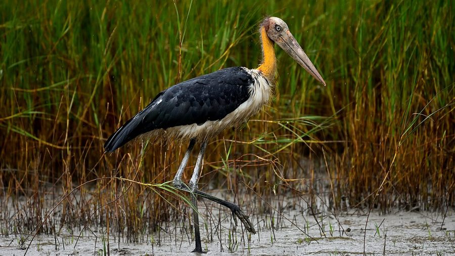

चंदियलLesser Adjutant
Leptoptilos javanicus · Ciconiidae · BRD-0200

- Scientific name वैज्ञानिक नाम
- Leptoptilos javanicus (Horsfield, 1821)
- Family कुल
- Ciconiidae
- Hindi हिंदी
- चंदियल
- Local names स्थानीय नाम
- chandiyal, chandial, lesser adjutant, adjutant stork
- Status here यहाँ की स्थिति
- native
- Movement आवागमन
- Resident, here all year
- Known from कहाँ दर्ज
- Others have published records from the Basti–Ayodhya districts बस्ती–अयोध्या के ज़िलों से दूसरों के प्रकाशित अभिलेख
- IUCN IUCN
- VU
- Review समीक्षा
- audited and independently read
When to look कब देखें
Present all year. साल भर मौजूद।
Tell it apart from इनसे अलग पहचानें
चंदियल / Lesser Adjutant
Leptoptilos javanicus (Horsfield, 1821) — Ciconiidae
चंदियल — यह बड़ी, भूरी और सफेद कलगी-दार स्टार्क पूरे साल पूर्वी उत्तर प्रदेश के तालाबों और नदियों के पास रहती है। इसके सिर पर काली और नंगी त्वचा है, जिससे यह बहुत अलग दिखती है। यह मैला-कचरा खाती है और मेढकों, मछलियों और जलीय जानवरों को निगलती है।
Quick Identification त्वरित पहचान
| Feature | Description |
|---|---|
| Size | Large stork; 110–120 cm long; wingspan 180–200 cm |
| Plumage | Dark brown and white; paler in flight |
| Head and neck | Largely bare skin; black and flesh-coloured |
| Bill | Large, heavy, pointed; dark with pale tip |
| Behaviour | Solitary or in small groups; stalks through shallow water |
| Flight | Powerful; legs trail in flight |
Field tip: A large, distinctive stork with bare black head and neck. Dark brown upperparts and white underparts. Usually solitary or in small groups at water bodies. Stalks slowly through shallow water hunting fish and frogs.
हिंदी — कैसे पहचानें:
बहुत बड़ी स्टार्क।
सिर नंगा, काला।
पानी में चलती है।
मछलियाँ खाती है।
Morphology आकारिकी
Biometrics:
| Measurement | Range |
|---|---|
| Total length | 1100–1200 mm |
| Wingspan | 1800–2000 mm |
| Bill | 95–125 mm |
| Tarsus | 145–170 mm |
| Weight | 2000–2500 g |
Size: 110–120 cm long; wingspan 180–200 cm; weighs 2–2.5 kg. A large stork.
Plumage: Dark brown to blackish above; pale brown on back and rump. Underparts largely white to pale buff. Underwings pale.
Head and neck: Largely bare skin, dark grey to blackish with pale patches. Crown and nape with sparse hair. Facial skin wrinkled and bare.
Bill: Large, heavy, pointed, dark grey with pale yellow or flesh-coloured tip. Adapted for hunting aquatic vertebrates.
Legs and feet: Long, stout, grey or yellowish; adapted for wading.
Eyes: Dark; small.
Sexes: Similar; males average slightly larger.
Juveniles: Browner overall; face more feathered; less bare skin visible.
Vocalisations. Largely silent; occasionally soft grunting sounds.
हिंदी: ज़्यादातर चुप रहता है। कभी-कभी गुड़-गुड़ की आवाज़ करता है।
Behaviour & Ecology व्यवहार और पारिस्थितिकी
Feeding: Stalks slowly through shallow water hunting prey. Feeds on:
- Fish (especially bottom feeders)
- Frogs and toads
- Crustaceans (crabs, shrimp)
- Aquatic insects
- Occasionally small reptiles
- Carrion (scavenging)
Hunting method: Wade-and-wait or slow stalking; takes prey from water.
Social behaviour: Solitary or in small groups; not very gregarious. Territorial in breeding season.
Roosting: Roosts on trees, bushes, or open ground near water.
Flight: Powerful flier; legs trail behind in flight. Soars on thermals.
हिंदी: पानी में धीरे-धीरे चलता है। मछलियाँ और मेढक खाता है।
Life Cycle / Phenology जीवन चक्र
Breeding season: May–August in eastern UP; peak June–July.
Nest: Large, platform nest of sticks in tall tree, usually near water. Both parents build and maintain.
Clutch: 2–3 eggs; whitish with brown markings.
Incubation and fledging: Both parents incubate. Incubation 28–30 days; fledging 60–70 days.
Chick-rearing: Long dependency period; chicks remain with parents for several months.
Moult: Gradual moult during non-breeding season.
Resident: Year-round in eastern UP; populations may shift locally with water availability.
हिंदी: गर्मी में घोंसला बनाता है। पेड़ों पर बहुत बड़े घोंसले बनाता है।
Host Plants or Prey आहार
| Food Type | Examples | Feeding Behaviour |
|---|---|---|
| Fish | Catfish, carp, bottom feeders | Wade and spear; swallow whole |
| Amphibians | Frogs, toads | Hunt in shallow water |
| Crustaceans | Crabs, freshwater shrimp | Pick from mud and water |
| Carrion | Dead fish, small animals | Opportunistic scavenging |
हिंदी: मछलियों का शिकार करता है। मेढक खाता है।
Predators / Natural Enemies शत्रु
- Nest predators: Large eagles, vultures
- Chick predators: Crows, monitor lizards
- Adult predators: Rarely preyed upon due to large size
हिंदी: बड़ी चिल्ली इसके चूजों को खा सकती है।
Agricultural / Human Relevance कृषि प्रासंगिकता
Protected status: Wildlife Protection Act 1972, Schedule IV. Listed as Vulnerable (VU) on IUCN Red List.
Conservation concern: Populations have declined significantly. Habitat loss (wetland drainage), pollution, and secondary poisoning from pesticides are threats.
Historical hunting: Hunted for meat and body parts historically; now protected.
Ecological role: Top predator in wetland food webs; scavenges dead animals (ecological sanitation).
Wetland importance: Indicator species of healthy wetland ecosystems.
हिंदी: विधि अधिनियम 1972 के अंतर्गत संरक्षित है। संरक्षण की आवश्यकता है।
Expected Locally स्थानीय रूप से अपेक्षित
Not a field record. Written from published accounts for eastern Uttar Pradesh. No confirmed local sighting yet — if you have seen it, that is what the atlas needs.
अभी तक स्थानीय पुष्टि नहीं। यह विवरण प्रकाशित स्रोतों से है, किसी अवलोकन से नहीं।
This species is NOT a field record. The distribution below is based on published sources describing where Lesser Adjutant should be looked for in the Basti–Ayodhya region.
Year-round presence: GBIF holds published records from the wider Awadh–Purvanchal plain, none yet from Basti–Ayodhya proper. Expected as year-round resident in eastern UP in larger wetlands, tanks, and river systems. Present but uncommon; numbers declining regionally due to habitat loss.
Where to look: Large, shallow water bodies (lakes, tanks); river margins; flooded areas during monsoon. Solitary or in small groups. Most visible early morning and late afternoon.
Seasonality: Year-round. Breeding season (June–July) birds may show increased activity at nest sites.
Detection: Watch for large wading birds in open shallow water. Stalking behaviour makes them observable; less vocal than other storks.
What a first record would be: A dated photograph showing distinctive bare head and large stork body, with location GPS coordinates and date, submitted through the About page of this atlas.
हिंदी: तालाबों में साल भर देखा जा सकता है। पानी में अकेला या दो-तीन साथ दिखता है।
Distribution वितरण
Global range: South and Southeast Asia from India to Indonesia and Philippines.
In India: Declining resident in wetlands throughout the subcontinent.
In Uttar Pradesh: Rare and local resident, declining in numbers.
In Basti district / eastern UP: Possible in larger wetlands; status needs confirmation through field surveys.
Research Questions शोध प्रश्न
- What is the current population status and distribution of Lesser Adjutant in eastern UP?
- What are the major threats to Lesser Adjutant in the region (habitat loss, pollution, hunting)?
- How does water level and wetland condition affect Lesser Adjutant presence and breeding?
- पूर्वी उत्तर प्रदेश में इस स्टार्क के आहार की संरचना क्या है, और यह मौसम के साथ बदलती है?
- How are nesting sites distributed, and what tree species are preferred for nesting? (Equipment-free: document all nesting trees and their characteristics.)
- क्या इसकी संख्या में गिरावट आ रही है, और इसके कारण क्या हैं?
Similar Species मिलती-जुलती प्रजातियाँ
| Species | Key Difference | Hindi | Field Rule | |
|---|---|---|---|---|
| [[woolly_necked_stork\ | Woolly-necked Stork]] (Ciconia episcopus) | Smaller; white neck with black markings; less bare skin on head | ऊनी गर्दन | Woolly-necked is smaller and has hairy, white neck. Lesser Adjutant is larger with bare, dark head. |
| [[painted_stork\ | Painted Stork]] (Mycteria leucocephala) | Colourful; pink and yellow bill; different habitat preference | रंगीन स्टार्क | Painted Stork is more colourful with painted bill. Lesser Adjutant is plain brown with bare head. |
| [[black_stork\ | Black Stork]] (Ciconia nigra) | If occurring: all black above; red bill and legs | काली स्टार्क | Black Stork is smaller and entirely black above. Not likely to co-occur in eastern UP. |
Field rule: A large, plain brown and white stork with distinctive bare, blackish head and neck. Solitary or in small groups in shallow water. Stalks slowly hunting fish and frogs. Often stands motionless for long periods.
Taxonomy & Classification वर्गीकरण
Original description. Described by Horsfield in 1821. Ciconia javanensis Horsfield, 1821. Type locality: Java.
Subspecies. Monotypic or poorly defined subspecies; all Asian populations sometimes considered L. j. javanicus.
Family and order placement. Order Ciconiiformes; family Ciconiidae (storks). Genus Leptoptilos comprises large Asian and African storks.
Phylogenetic notes. Leptoptilos is a well-defined Asian genus; related to the marabou storks of Africa.
IUCN status rationale. Assessed as Vulnerable (VU) globally due to population decline. Major threats are habitat loss from wetland drainage, pollution, and secondary poisoning. Protected under Wildlife Protection Act 1972 in India.
हिंदी: खतरे में है। संरक्षण की ज़रूरत है।
Photo Gallery फोटो गैलरी
No photos yet — add field photos to media/species/lesser_adjutant/ and run node scripts/sync_photos.js.
Wanted photos:
- Standing in shallow water
- Close-up of bare head showing skin pattern
- In flight with legs trailing
- Stalking posture
- Roosting on tree
- Pair at potential nesting site
References संदर्भ
- Horsfield, T. (1821). Zoological Researches in Java. London. Type locality: Java.
- Ali, S. & Ripley, S. D. (1969). Handbook of the Birds of India and Pakistan. Vol. 4 (Gannets to Herons). Oxford University Press, Delhi. Pp. 21–24.
- Grimmett, R., Inskipp, C. & Inskipp, T. (2011). Birds of the Indian Subcontinent (2nd edn). Oxford University Press, Delhi. P. 128.
- Praveen, J., Jayapal, R. & Pittie, A. (2016). A checklist of the birds of India. Indian Birds 11 (5–6): 113–172.
- GBIF Occurrence Data — Leptoptilos javanicus, India.
- IUCN Red List (2023). Leptoptilos javanicus — BirdLife International assessment. IUCN, Cambridge. Status: Vulnerable.
Source file: species/fauna/birds/lesser_adjutant.md